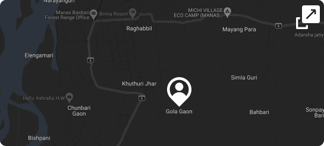
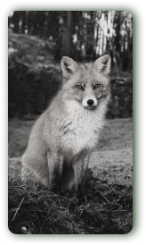
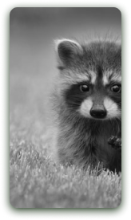
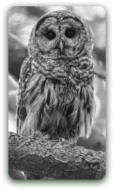

You are here
Manas National Park of Assam is one of the only 2 localities in Assam where Barasingha or swamp deer appear. The sanctuary also house other species of mammals including Asian water buffaloes, hog deers,barking deers and chital deers.The barasingha, also called swamp deer, is a deer species distributed in the Indian subcontinent...... Read more
Spot nearby


